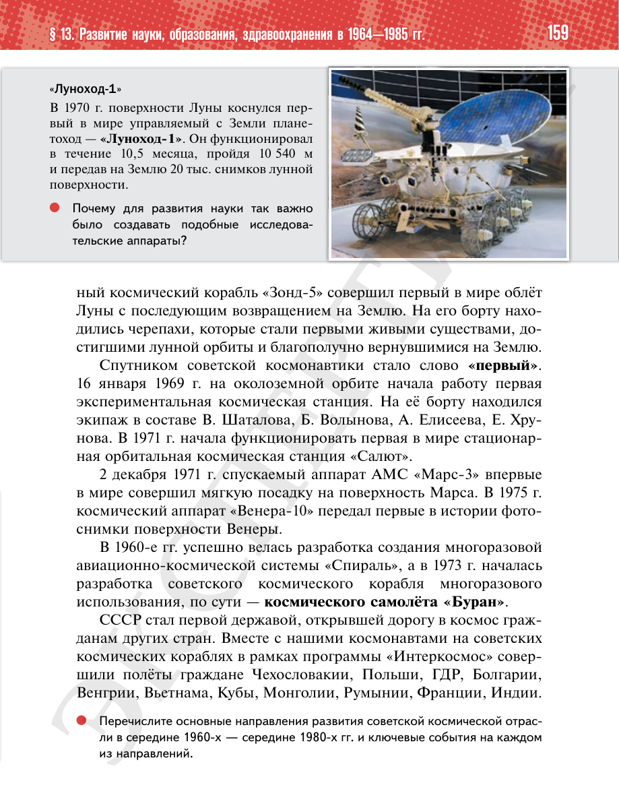

⌂
Мединский.нет
Последнее обновление: 16.08.2026 18:31
Мединский.нет
›
История России. 11 класс. Базовый уровень
›
Глава I. СССР в 1945—1991 гг.
›
§ 13. Развитие науки, образования, здравоохранения в 1964—1985 гг.
›
стр. 159

← стр. 158
Оглавление
стр. 160 →
×